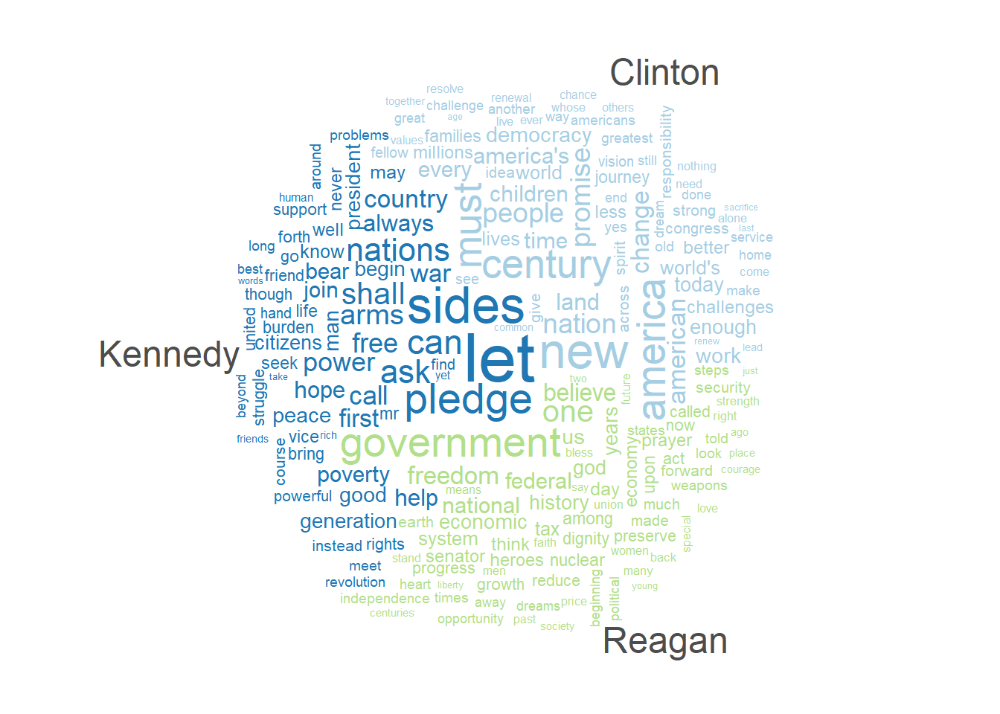
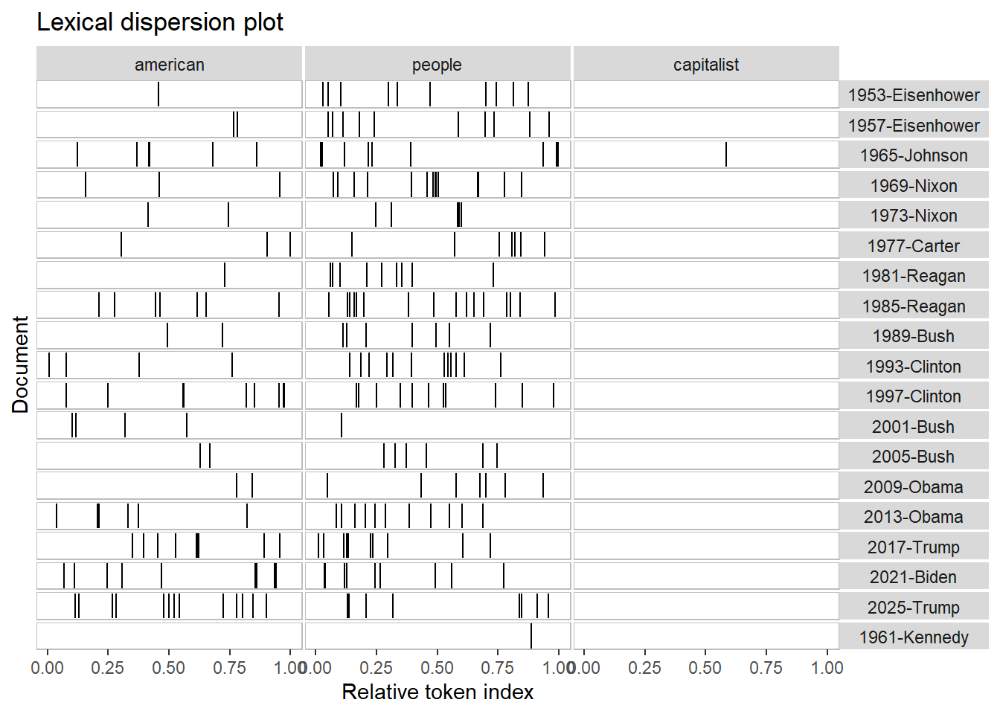
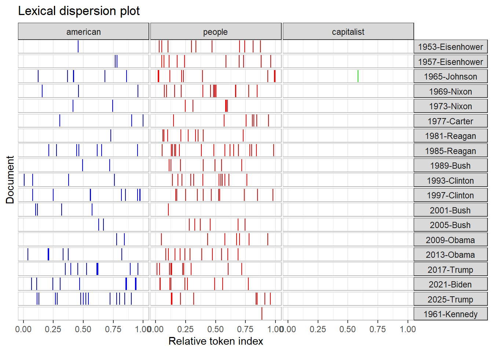
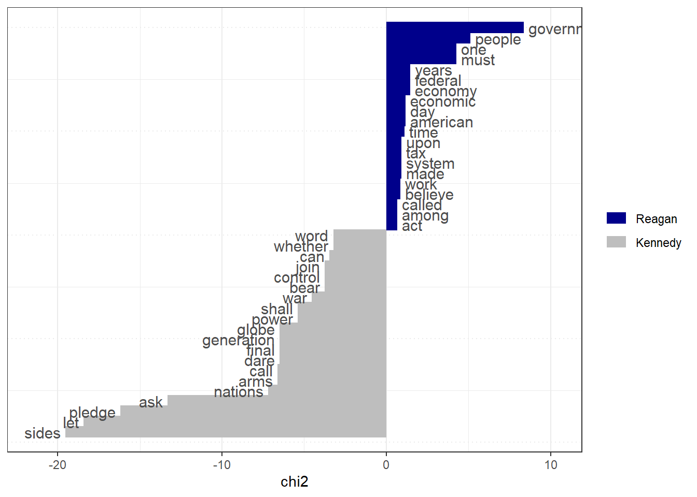
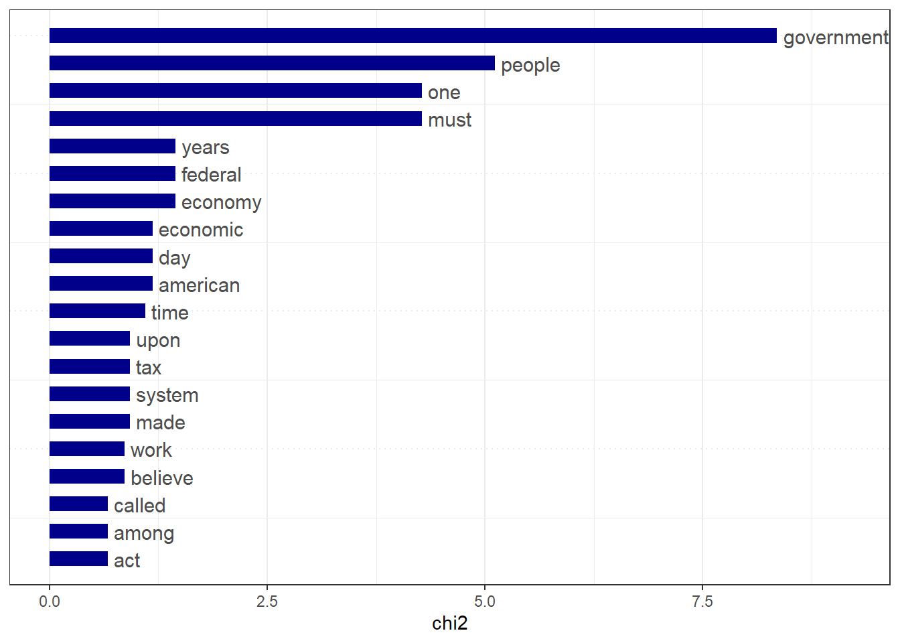
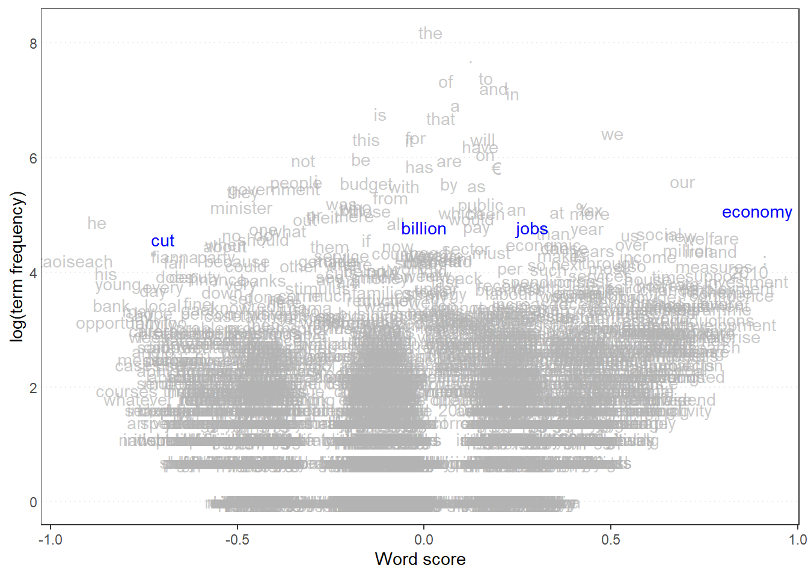
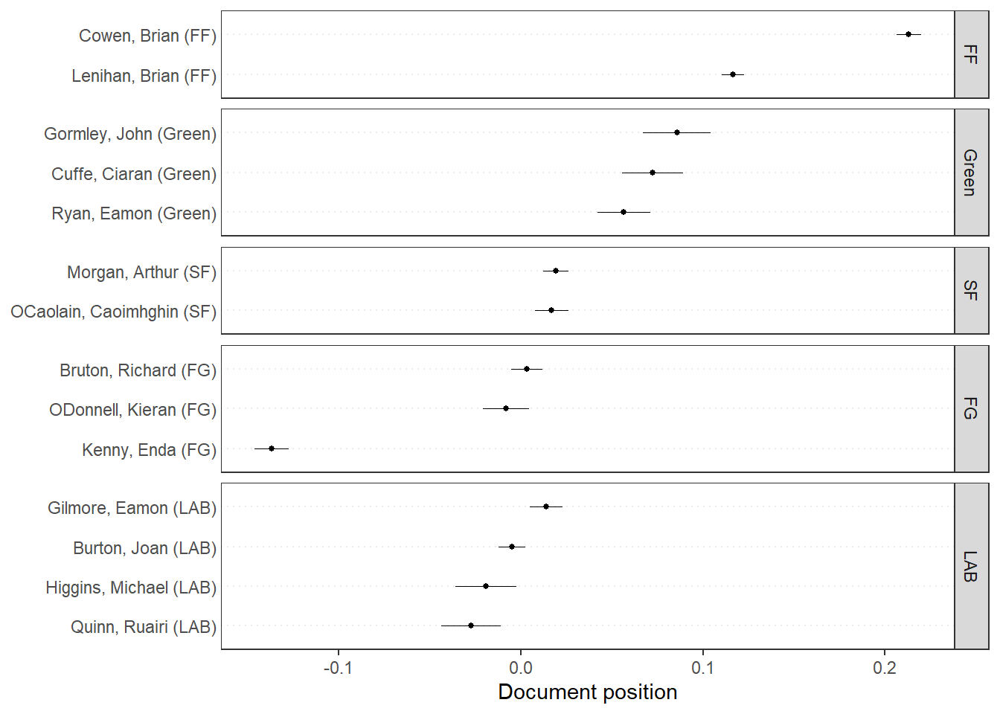
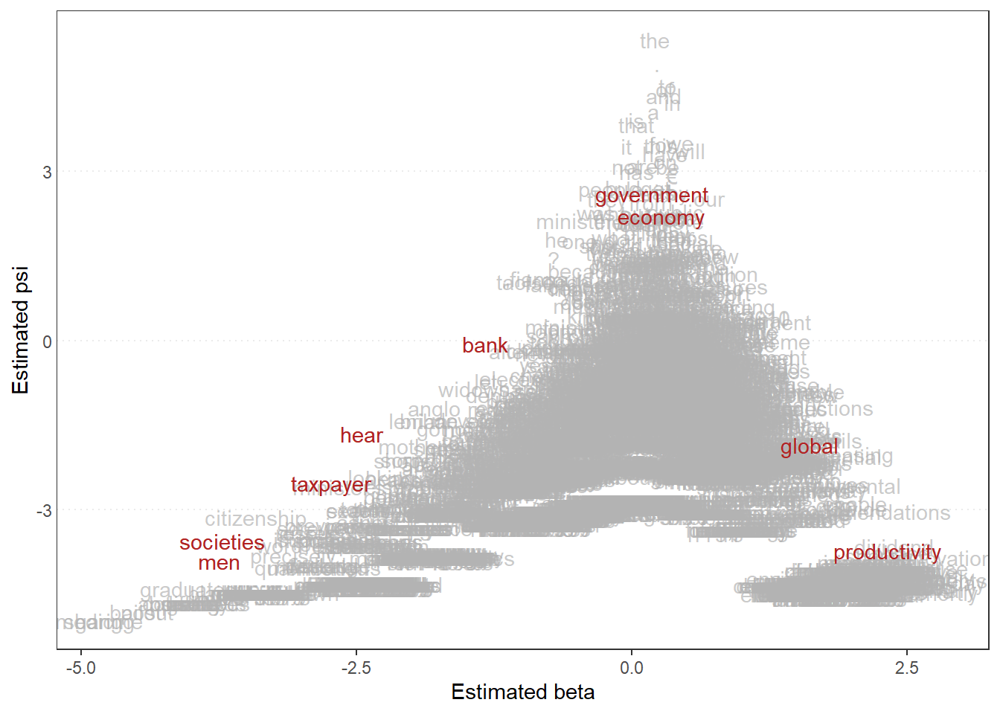
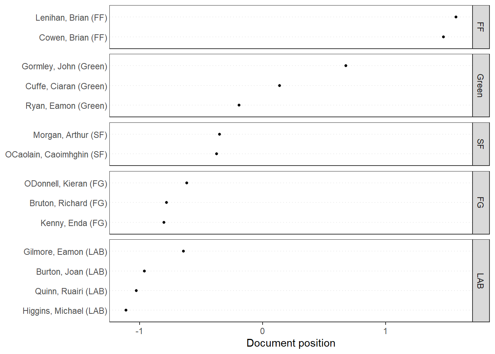

library(quanteda)Warning: package 'quanteda' was built under R version 4.5.3Package version: 4.3.1
Unicode version: 15.1
ICU version: 74.1Parallel computing: 12 of 12 threads used.See https://quanteda.io for tutorials and examples.library(quanteda.textmodels)Warning: package 'quanteda.textmodels' was built under R version 4.5.3library(quanteda.textplots)Warning: package 'quanteda.textplots' was built under R version 4.5.3library(readr)Warning: package 'readr' was built under R version 4.5.3library(ggplot2)Warning: package 'ggplot2' was built under R version 4.5.3# Wordcloud
# based on US presidential inaugural address texts, and metadata (for the corpus), from 1789 to present.
dfm_inaug <- corpus_subset(data_corpus_inaugural, Year <= 1826) %>%
tokens(remove_punct = TRUE) %>%
tokens_remove(stopwords('english')) %>%
dfm() %>%
dfm_trim(min_termfreq = 10, verbose = FALSE)
set.seed(100)
textplot_wordcloud(dfm_inaug)
inaug_speech = data_corpus_inaugural
corpus_subset(data_corpus_inaugural,
President %in% c("Kennedy", "Reagan", "Clinton")) %>%
tokens(remove_punct = TRUE) %>%
tokens_remove(stopwords("english")) %>%
dfm() %>%
dfm_group(groups = President) %>%
dfm_trim(min_termfreq = 5, verbose = FALSE) %>%
textplot_wordcloud(comparison = TRUE)
textplot_wordcloud(dfm_inaug, min_count = 10,
color = c('firebrick', 'pink', 'green', 'purple', 'orange', 'blue'))data_corpus_inaugural_subset <-
corpus_subset(data_corpus_inaugural, Year > 1949)
kwic(tokens(data_corpus_inaugural_subset), pattern = "american") %>%
textplot_xray()
textplot_xray(
kwic(tokens(data_corpus_inaugural_subset), pattern = "american"),
kwic(tokens(data_corpus_inaugural_subset), pattern = "people"),
kwic(tokens(data_corpus_inaugural_subset), pattern = "capitalist")
)
theme_set(theme_bw())
g <- textplot_xray(
kwic(tokens(data_corpus_inaugural_subset), pattern = "american"),
kwic(tokens(data_corpus_inaugural_subset), pattern = "people"),
kwic(tokens(data_corpus_inaugural_subset), pattern = "capitalist")
)
g + aes(color = keyword) +
scale_color_manual(values = c("blue", "red", "green")) +
theme(legend.position = "none")
library(quanteda.textstats)Warning: package 'quanteda.textstats' was built under R version 4.5.3features_dfm_inaug <- textstat_frequency(dfm_inaug, n = 100)
# Sort by reverse frequency order
features_dfm_inaug$feature <- with(features_dfm_inaug, reorder(feature, -frequency))
ggplot(features_dfm_inaug, aes(x = feature, y = frequency)) +
geom_point() +
theme(axis.text.x = element_text(angle = 90, hjust = 1))
# Get frequency grouped by president
freq_grouped <- textstat_frequency(dfm(tokens(data_corpus_inaugural_subset)),
groups = data_corpus_inaugural_subset$President)
# Filter the term "american"
freq_american <- subset(freq_grouped, freq_grouped$feature %in% "american")
ggplot(freq_american, aes(x = group, y = frequency)) +
geom_point() +
scale_y_continuous(limits = c(0, 14), breaks = c(seq(0, 14, 2))) +
xlab(NULL) +
ylab("Frequency") +
theme(axis.text.x = element_text(angle = 90, hjust = 1))Warning: Removed 1 row containing missing values or values outside the scale range
(`geom_point()`).
dfm_rel_freq <- dfm_weight(dfm(tokens(data_corpus_inaugural_subset)), scheme = "prop") * 100
head(dfm_rel_freq)Document-feature matrix of: 6 documents, 4,625 features (86.44% sparse) and 4 docvars.
features
docs my friends , before i
1953-Eisenhower 0.14582574 0.14582574 4.593511 0.1822822 0.10936930
1957-Eisenhower 0.20975354 0.10487677 6.345045 0.1573152 0.05243838
1961-Kennedy 0.19467878 0.06489293 5.451006 0.1297859 0.32446463
1965-Johnson 0.17543860 0.05847953 5.555556 0.2339181 0.87719298
1969-Nixon 0.28973510 0 5.546358 0.1241722 0.86920530
1973-Nixon 0.05012531 0.05012531 4.812030 0.2005013 0.60150376
features
docs begin the expression of those
1953-Eisenhower 0.03645643 6.234050 0.03645643 5.176814 0.1458257
1957-Eisenhower 0 5.977976 0 5.034085 0.1573152
1961-Kennedy 0.19467878 5.580792 0 4.218040 0.4542505
1965-Johnson 0 4.502924 0 3.333333 0.1754386
1969-Nixon 0 5.629139 0 3.890728 0.4552980
1973-Nixon 0 4.160401 0 3.408521 0.3007519
[ reached max_nfeat ... 4,615 more features ]rel_freq <- textstat_frequency(dfm_rel_freq, groups = dfm_rel_freq$President)
# Filter the term "american"
rel_freq_american <- subset(rel_freq, feature %in% "american")
ggplot(rel_freq_american, aes(x = group, y = frequency)) +
geom_point() +
scale_y_continuous(limits = c(0, 0.7), breaks = c(seq(0, 0.7, 0.1))) +
xlab(NULL) +
ylab("Relative frequency") +
theme(axis.text.x = element_text(angle = 90, hjust = 1))Warning: Removed 1 row containing missing values or values outside the scale range
(`geom_point()`).
dfm_weight_pres <- data_corpus_inaugural %>%
corpus_subset(Year > 2000) %>%
tokens(remove_punct = TRUE) %>%
tokens_remove(stopwords("english")) %>%
dfm() %>%
dfm_weight(scheme = "prop")
# Calculate relative frequency by president
freq_weight <- textstat_frequency(dfm_weight_pres, n = 15,
groups = dfm_weight_pres$President)
ggplot(data = freq_weight, aes(x = nrow(freq_weight):1, y = frequency)) +
geom_point() +
facet_wrap(~ group, scales = "free") +
coord_flip() +
scale_x_continuous(breaks = nrow(freq_weight):1,
labels = freq_weight$feature) +
labs(x = NULL, y = "Relative frequency")
# Only select speeches by Kennedy and Reagan
pres_corpus <- corpus_subset(data_corpus_inaugural,
President %in% c("Kennedy", "Reagan"))
# Create a dfm grouped by president
pres_dfm <- tokens(pres_corpus, remove_punct = TRUE) %>%
tokens_remove(stopwords("english")) %>%
tokens_group(groups = President) %>%
dfm()
# Calculate keyness and determine Reagan as target group
result_keyness <- textstat_keyness(pres_dfm, target = "Reagan")
# Plot estimated word keyness
textplot_keyness(result_keyness) 
# Plot without the reference text (in this case Obama)
textplot_keyness(result_keyness, show_reference = FALSE)
library(quanteda.textmodels)
# Irish budget speeches from 2010 (data from quanteda.textmodels)
# Transform corpus to dfm
data(data_corpus_irishbudget2010, package = "quanteda.textmodels")
ie_dfm <- dfm(tokens(data_corpus_irishbudget2010))
# Set reference scores
refscores <- c(rep(NA, 4), 1, -1, rep(NA, 8))
# Predict Wordscores model
ws <- textmodel_wordscores(ie_dfm, y = refscores, smooth = 1)
# Plot estimated word positions (highlight words and print them in red)
textplot_scale1d(ws,
highlighted = c("economy", "jobs", "cut", "billion"),
highlighted_color = "blue")
# Get predictions
pred <- predict(ws, se.fit = TRUE)
# Plot estimated document positions and group by "party" variable
textplot_scale1d(pred, margin = "documents",
groups = docvars(data_corpus_irishbudget2010, "party"))
# Plot estimated document positions using the LBG transformation and group by "party" variable
pred_lbg <- predict(ws, se.fit = TRUE, rescaling = "lbg")
textplot_scale1d(pred_lbg, margin = "documents",
groups = docvars(data_corpus_irishbudget2010, "party"))
# Estimate Wordfish model
library("quanteda.textmodels")
wf <- textmodel_wordfish(dfm(tokens(data_corpus_irishbudget2010)), dir = c(6, 5))
# Plot estimated word positions
textplot_scale1d(wf, margin = "features",
highlighted = c("government", "global", "taxpayer",
"bank", "economy", "societies", "men",
"productivity", "hear"),
highlighted_color = "firebrick")
# Plot estimated document positions
textplot_scale1d(wf, groups = data_corpus_irishbudget2010$party)
# Transform corpus to dfm
ie_dfm <- dfm(tokens(data_corpus_irishbudget2010))
# Run correspondence analysis on dfm
ca <- textmodel_ca(ie_dfm)
# Plot estimated positions and group by party
textplot_scale1d(ca, margin = "documents",
groups = docvars(data_corpus_irishbudget2010, "party"))